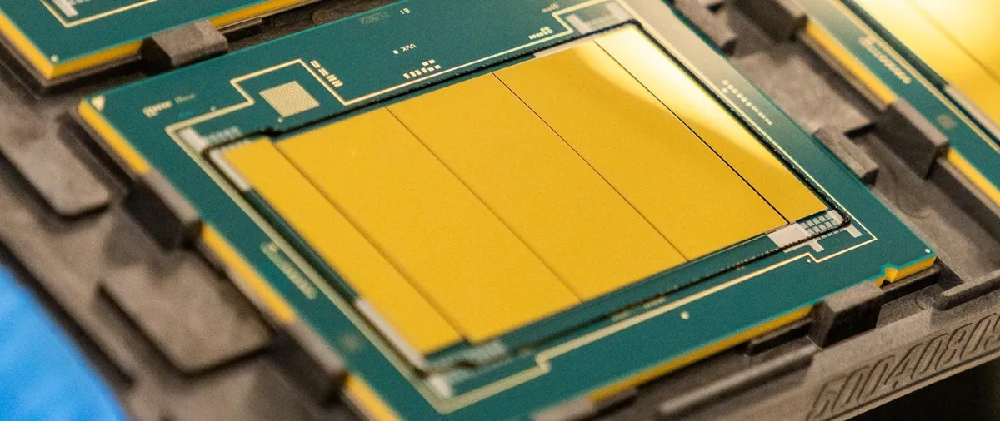
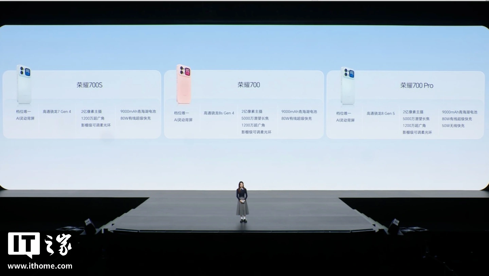
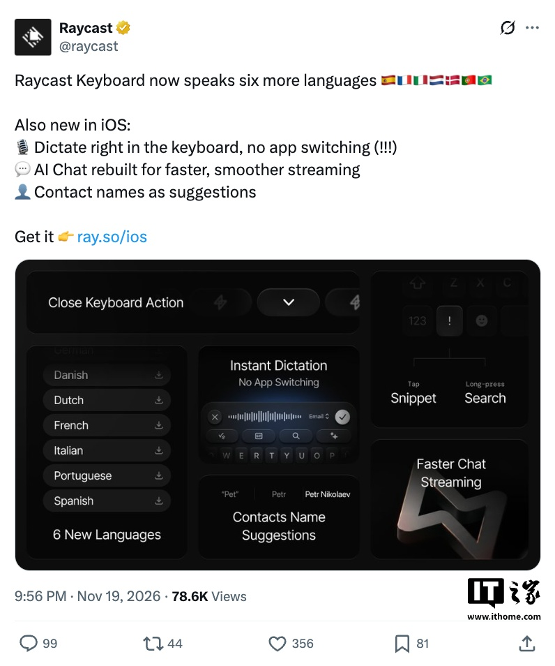
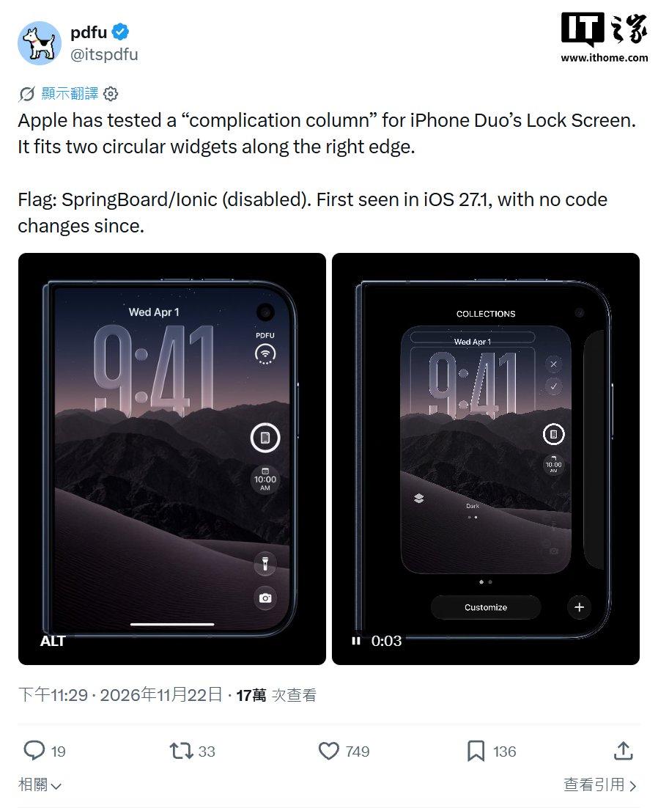

뉴스
기술의 변화, 매일 한눈에.
카메라 · 스마트폰 · AI, 해외 테크 소식을 모아 전합니다.
최근 발행2026-11-24
새로 들어온 소식

최신 뉴스
전체 4,560개 기사Ulefone Armor 35 Pro 러기드 스마트폰, 429.99달러에 출시 예정: 장거리 레이저 거리 측정 및 고출력 LED 조명 지원
ST마이크로일렉트로닉스: 2025~2028년 STM32 칩 매출 두 배 달성 목표

카메라와 디스플레이 없이 자동으로 시력을 교정하는 스마트 안경

팻 겔싱어: Intel 18A 공정 수율 70%, 차세대 14A 2028년 양산 예정
Mozilla, Apple이 실제 Firefox 브라우저의 iPhone 출시를 막고 있다고 비난, 기존 앱은 WebKit을 직접 포기할 수 없어

주간 10만 대 증가: Huawei Pura X View 바 타입 스마트폰 최신 판매량 약 106.12만 대 기록

Huawei Mate 90 Air 스마트폰 카메라 사양 유출: 50MP 메인 카메라 + 8MP 초광각 + 12MP 망원 + 홍펑 렌즈
Honor YOYO · 더우바오 스마트폰 어시스턴트 공개, 음성 호출, 연속 대화, 전체 기억 등 지원
리젠, Honor 폴더블 스마트폰 2027년 3월 출시 계획 공식 발표, "주름이 전혀 없을 것"이라고 언급
Honor 700 시리즈, 후면 스크린, 9000mAh 배터리, 200MP 카메라 탑재하고 출시

Honor 700/Pro 스마트폰, 1.59인치 AI 플렉서블 후면 스크린 탑재: 업계 최초 AI 맞춤형 스티커, 후면 스크린 자유로운 부착

리젠, Honor 700 시리즈 스마트폰 가격 책정에 대해 "어려움은 우리가 감수하고, 사양 축소로 소비자를 속여서는 안 된다"고 밝혀

Geekwills의 블랙프라이데이 세일 베스트 스마트폰!

개발자가 Apple 제한 우회, iPhone 타사 키보드에 직접 음성 입력 구현 성공

iPhone 20 Pro에 이어 Oppo, Samsung, Xiaomi 차기 플래그십 스마트폰에도 곡면 디스플레이 탑재 전망

Apple Siri AI 집단 소송 합의: 조건에 부합하는 iPhone 한 대당 최소 61달러 배상 예상

Apple, iPhone 듀오 잠금 화면 오른쪽에 세로형 위젯 바 개발 중, 더 많은 정보 표시 가능

한국, AI 부정행위 방지 위해 수험생 앞치마 착용 및 6년 만에 휴대폰 회수 조치

구르만: Apple, AI 시대 생존 위해 구조 및 문화 전반의 개혁 필요
구글 AI 검색 수익화 난항, Apple 서비스 사업 매출 성장 둔화

vivo Y21s/Y11s/Y05s 5G 스마트폰 3종 사양 유출: 6.74인치 120Hz LCD 디스플레이, 6500mAh 배터리
검색 결과가 없습니다
다른 검색어를 입력하거나 필터를 초기화해 보세요.